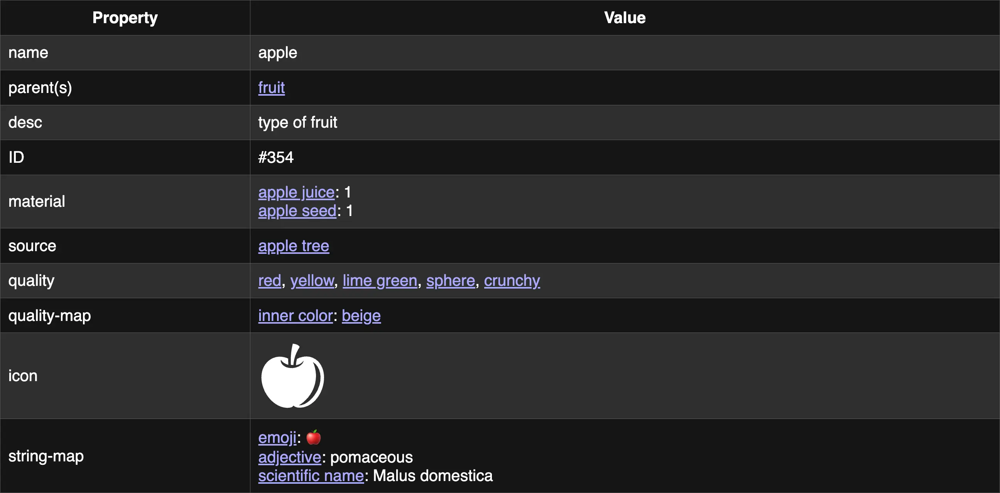
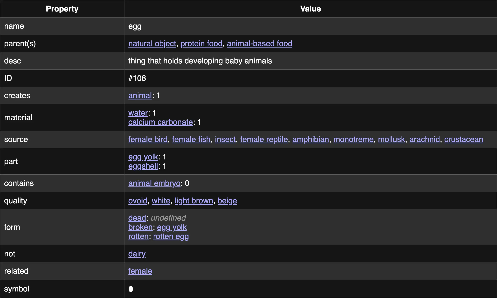
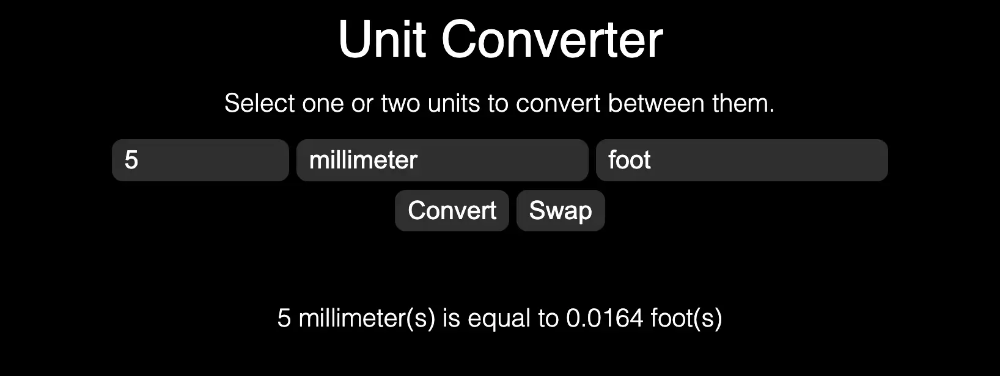
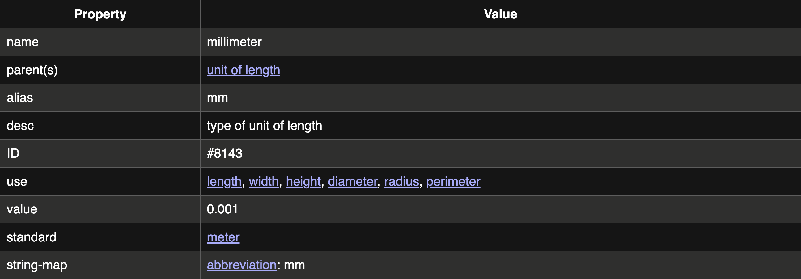

Ontomata is a large interconnected web of thousands of concepts, being developed with future game and tool development in mind.
There is no public access to Ontomata yet, and everything on this page is subject to change.
What is it?
Ontomata is many things, but at its core is a database, or knowledge base.
One could call it an "object database", although it also contains abstract concepts, like actions and characteristics.
These objects and concepts are called classes - types of things that can describe multiple instances.
Each class, such as this apple, has properties associated with it, such as its name, material, color, and more. Each blue link is another class.
Most importantly, each class has associated parent classes, and those parents also have parents. For example, one of the parent trees for cat is:
thing > physical object > natural object > living thing > cellular lifeform > eukaryote > animal > eumetazoan > bilaterian > deuterostome > chordate > vertebrate > tetrapod > mammal > therian > placental mammal > carnivoran > feliformian > felid > wildcat > cat
Therefore, it can be determined that all cats are both mammals and physical. See more.
Ontomata functionality is also planned to be used for an open-world multiplayer role-playing game, but work on that has not begun.
Where is it?
There is no way to access Ontomata right now.
When it goes public, there will be many ways to contribute your original research.
For now, we would happily take any suggestions by email, at contact@R74n.com.
How much?
There are currently over 10,000 classes, all with their own data linking to each other. There is more data beyond the classes as well.
Use Cases
The possibilities with Ontomata have no end in sight. Below are just some that we've thought of.
Classification
An apple is a type of fruit. Fruit is a type of food. Food is edible. Therefore, without doing anything special to apples, they are inherently edible.
If used in a game, you could potentially have endless combinations of items, made of different materials. You could have half a jar of the year-old blood of a pig of a specific breed, for example. Or, a hamburger with any combination of toppings.
This behavior can be used in a crafting system, where a user can use polished sandstone in a sword recipe that only specifies rock.
It can determine what certain objects can contain, or where you can place accessories on your body.
Annotation
Practically anything could be semantically marked up using Ontomata classes.
- Text markup - The {{C4162|quick}} {{C676|fox}} {{C4244|jumped}} {{C10160|over}} the {{C485|dog}}.
- Image markup, with areas of the picture drawn to match a class.
- Video markup, like image markup but with timestamps.
- 3D markup, with particular objects in a room or scene matched, archiving a place in time.
- Map markup, with paths, objects, buildings, and more matched.
- Webpage or URL markup, such as a product type for an Amazon listing.
- Catalog of your own pantry.
List Generator
Ontomata can create a list of all classes of a certain type, such as rocks!
rock (59): gravel, basalt, limestone, molten rock, magma, lava, igneous rock, granite, volcanic rock, andesite, pumice, diorite, obsidian, lapis lazuli, metamorphic rock, sedimentary rock, sandstone, chalk, coal, end stone, netherrack, slate, flint, chert, moon rock, bedrock, cobblestone, marble, mossy rock, prismarine, tuff, polished rock, shale, tiger's eye, deepslate, Apache tear, snowflake obsidian, blackstone, lodestone, bituminous coal, oil shale, mudrock, claystone, mudstone, siltstone, soapstone, emery, meteoroid, stromatolite, anthracite, lignite, loess, stepping stone, brownstone, bluestone, dolerite, travertine, bauxite, bentonite
Taxonomic Tree
Ontomata could be used to create automatic taxonomic trees based on the existing classes for plants or animals.
Unit Converter
Many units are stored in Ontomata and modeled in a way that makes unit conversion easy.
 Inclusion Criteria
We have certain standards for what should be included in the Ontomata class database. Generally, something must follow both of these rules:
Must be a class, meaning multiple instances that are of it can exist. For example:
- A breed of dog, yes. Your pet dog, no.
- Human, yes. David Attenborough, no.
- Ringed planet, yes. Saturn, no.
- Qualities, such as the color red or the shape hexagon, are counted as classes because multiple instances can inherit them.
- Actions are classes because they can be performed multiple times.
Must be one of the following:
- Generic class, such as octopus or sandstone.
- Standard class that many manufacturers use, such as a Lightning cable or Blue-ray disc, but not an iPhone.
- Fictional class that appears in many independent works, such as mithril or a basilisk, including mythology and legends.